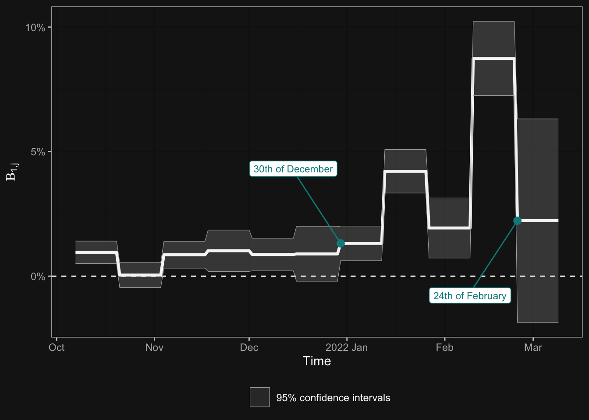

Our recent article was published at Finance Research Letters.
The economy of the second decade of the 21st century is characterised by sudden economic shocks. The Russian military operation in Ukraine on the 24th of February had a significant impact on the global financial markets and the economy. There are conflicting views on whether the event surprised the world or if it was already expected.
On one hand, the escalation of the conflict had been building up for many years, giving the markets time to factor in this danger in advance. On the other hand, significant movements were observed in the financial markets after the outbreak of the war, indicating that the news came as a surprise to investors. The solution likely lies somewhere in between, with a gradually increasing number of investors anticipating the escalation of the conflict.
We applied Kyle (1985) model, which is based on informed and uninformed investors, to investigate when and how the conviction of a war appeared among financial market participants.
The assumption of the empirical model is that after the outbreak, no one can doubt the fact of the war, so the observed prices at that time already reflect the value attributed to a financial security in a war scenario. This is referred to as liquidity value. Once this price is known, we examine historically how close the prices were to their liqudation values during specific periods. The simplest way to illustrate this is presented by Figure 1, the average absolute differences from the liquidation value over time.
We applied two formal models. The first model examines, within 10 trading days divided into windows, to what extent the relative price to liquidity value explains the volatility of prices. In other words, it investigates how much can be said that traders started considering countries who would fall sharply in the event of a war outbreak as less valuable.

Our second formal model identifies the exact date of the pricing initiation. It is a non-linear regression with a behavioral equation that includes two states. In the first state, the difference from the liquidity value does not affect price movements, while in the second state, there is a monotonically increasing effect as the event approaches (as seen in Figure 2).
The identification of the exact date was necessary because although the described behavior can be captured well in the model presented by Figure 2, we only see time windows there. Based on the non-linear model, we can conclude that the pricing initiation is 50 days before the outbreak, so it can be set on January 6th.
The predictability of war plays a role in numerous topics on economic and political fields, but the fact that the stock market priced this risk in just 50 days before its outbreak highlights that we are living in a decade of uncertainty.
For citation, please use the version published in Finance Research Letters (currently ranked as the 4th top financial journal by Google Scholar):
Granát, M. P., Lehmann, K., Nagy, O., & Neszveda, G. (2023). Expect the unexpected: Did the equity markets anticipate the Russo-Ukrainian war?. Finance Research Letters, 104301.
References
Granát, Marcell P., Kristóf Lehmann, Olivér Nagy, and Gábor Neszveda. 2023. “Expect the Unexpected: Did the Equity Markets Anticipate the Russo-Ukrainian War?” Finance Research Letters 58 (December): 104301. https://doi.org/10.1016/j.frl.2023.104301.
Kyle, Albert S. 1985. “Continuous Auctions and Insider Trading.” Econometrica 53 (6): 1315–35. https://doi.org/10.2307/1913210.